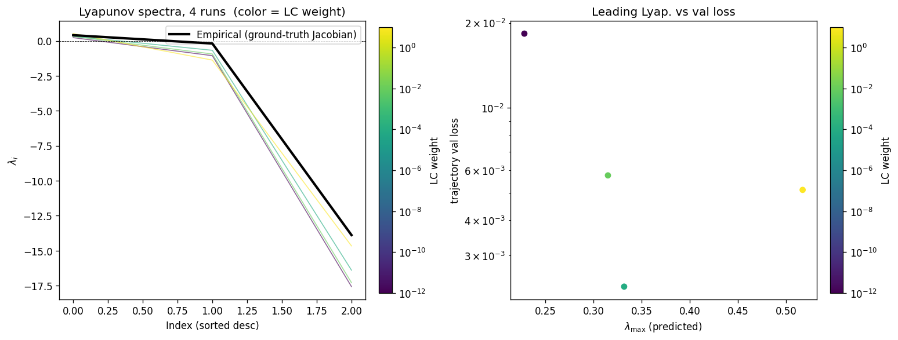
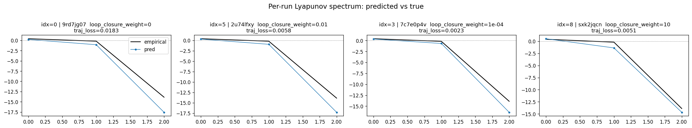
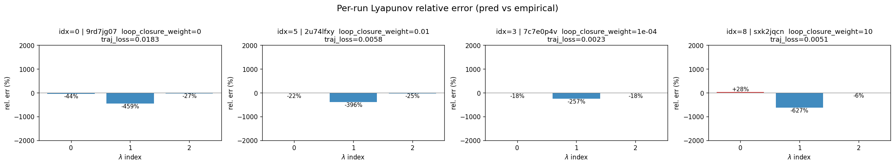

lorenz_partial_25d_additive_mse_p30_obsnoise001__lc_sweepProject: Lorenz_INDpartial_N25_D1_NormTrue_T3__JacobianODE
Launched: 2026-04-17T01:50:10Z
Completed: 2026-04-17T06:05:17Z
Outcome: complete_clean
Git: latent-JacobianODE @ f05d2ea
Expected runs: 9
lorenz_partial_25d_additive_mse_p30Description
Partial-obs Lorenz: x-coordinate only (observed_indices=[0]), n_delays=25, delay_spacing=1. Encoder input 25-D, z_dyn 3-D, z_null 22-D with kl_null_weight=0. Additive coupling encoder, joint training, reconstruction_mode='most_recent'. Plain MSE loss. prediction_steps=30, seq_length=45. obs_noise_scale=0.
Hypothesis
A longer prediction horizon sharpens the forward-rollout training signal, which in partial-obs has been the main limiter of spectrum recovery. Expecting tighter λ_min (less under-contracted than the 10-step baseline) and improved trajectory_r2.
Success criteria
Overall best MASE: 0.8514 (LC weight = 1.0e-06, obs_noise_scale = 0.00) Overall best traj loss: 0.00180 at epoch 131.0 Runs analyzed: 10
obs_noise_scale| obs_noise_scale | Best LC weight | Best traj loss | MASE at best | R² | LC loss | epoch |
|---|---|---|---|---|---|---|
| 0.0 | 1.0e-06 | 0.00180 | 0.8514 | 0.9952 | 0.578 | 131.0 |
| Criterion | Verdict | Note |
|---|---|---|
| Best run's leading Lyapunov exponent > 0 | Unknown | |
| Best run's predicted Lyapunov spectrum within ~40% of empirical | Unknown | |
| Noticeable improvement in λ_min recovery vs p10 partial_25d_mse | Unknown |
Automated verdicts use simple numeric-threshold parsing and may mis-classify qualitative criteria. The Discussion section below takes precedence.



(to be written)